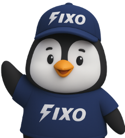

<!DOCTYPE html>
<html lang="en">
  <head>
    <meta charset="UTF-8" />
    <meta name="viewport" content="width=device-width, initial-scale=1.0" />
    <title>FIXO - Onestop Electronic Repair Solution</title>
    <!-- Added line 8,9,12 -->
    <meta name="description" content="Book reliable, fast doorstep repair services for mobiles and laptops with FIXO. Trusted by 1000+ customers. Genuine parts. Expert technicians." />
    <meta name="keywords" content="FIXO, mobile repair, laptop repair, doorstep repair service, screen replacement, battery change, Chennai, India" />
    <meta name="description" content="FIXO" />
    <meta name="author" content="FIXO" />
    <meta name="robots" content="index, follow" />
    <link rel="icon" type="image/fixoo.ico" href="fixoo.ico">
  </head>

  <body>
    <div id="root"></div>
    <script src="https://cdn.gpteng.co/gptengineer.js" type="module"></script>
    <script type="module" src="/src/main.tsx"></script>
  </body>

  <!-- Ravvio Chat Bubble Widget -->
<style>
  .chat-container {
  position: fixed;
  bottom: 20px;
  right: 20px;
  z-index: 10; /* Reduced from 1000 to allow other elements to appear above it */
}

#chat-toggle { display: none; }

.chat-button {
  width: 75px; height: 75px;
  border-radius: 50%;
  background: linear-gradient(135deg, #1e3a8a, #1e3a8add);
  color: white; border: none; cursor: pointer;
  box-shadow: 0 4px 12px rgba(0, 0, 0, 0.3);
  display: flex; align-items: center; justify-content: center;
  transition: all 0.3s cubic-bezier(0.175, 0.885, 0.32, 1.275);
  overflow: hidden;
  padding: 8px;
}

.chat-button img {
  width: 60px;
  height: 60px;
  object-fit: contain;
  border-radius: 50%;
}

.chat-frame {
  position: absolute;
  bottom: 80px;
  right: 0;
  display: none;
  width: 350px;
  height: 550px; /* Shortened height */
  border-radius: 16px;
  overflow: hidden;
  box-shadow: 0 8px 24px rgba(0,0,0,0.2);
}

/* When chat is open, increase z-index to bring it to front */
#chat-toggle:checked ~ .chat-frame {
  display: block;
  animation: popIn 0.4s cubic-bezier(0.175, 0.885, 0.32, 1.275) forwards;
  z-index: 1000;
}

/* Also increase the button z-index when chat is open */
#chat-toggle:checked ~ .chat-button {
  z-index: 1000;
}

@keyframes popIn {
  0% { transform: scale(0.95); opacity: 0; }
  100% { transform: scale(1); opacity: 1; }
}

@media screen and (max-width: 767px) {
  .chat-frame {
    width: calc(100vw - 40px);
    height: 450px; 
    right: 0;
  }
}

@media screen and (max-height: 700px) {
  .chat-frame {
    height: 350px;
  }
}

@media screen and (max-width: 767px) and (max-height: 700px) {
  .chat-frame {
    width: calc(100vw - 40px);
    height: 300px;
    right: 0;
  }
}
</style>

  <div class="chat-container">
    <input type="checkbox" id="chat-toggle">
    <label class="chat-button" for="chat-toggle">
      
    </label>
    <div class="chat-frame">
      <iframe src="https://chatbot.ravvio.in/embed/f9ef8a3c-1ce2-426b-bc9e-3a279cd69110?primaryColor=%231e3a8a&chatTitle=FIXO+Assistant&welcomeMessage=Hi+there%21+I%27m+FIXO%27s+assistant.+How+can+I+help+you+today%3F&showBranding=true&suggestedQuestions=%5B%22What+services+do+you+offer%3F%22%2C%22How+can+I+get+started%3F%22%2C%22What+all+devices+you+repair%3F%22%5D" width="100%" height="100%" style="border: none;" title="Chatbot"></iframe>
    </div>
  </div>
</html>
